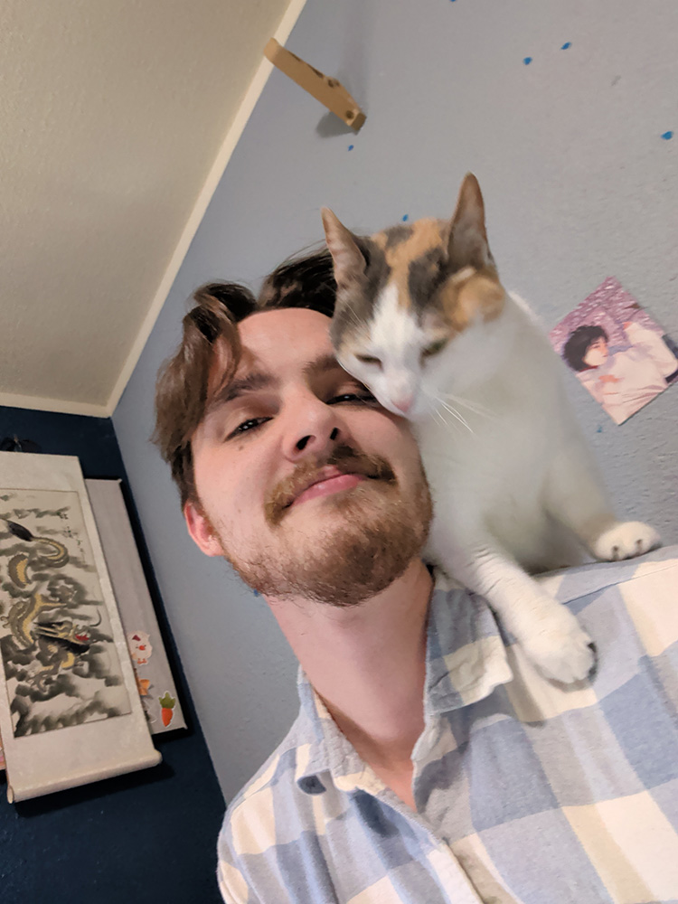

UPDATE 08/17/2026 I do corporate video production and have for seven years. I am currently trying to exist outside of the internet, and do not really use social media. I do, however, have many passion projects that I am working on in the little time I get between things. Here is a list that I may check back on and update one day.
- Mosaic (been working on while rewatching shows with my wife or during long meetings)
- Cyberdeck (To access Goolge Messages for Web so I am not cursed to have a phone next to me at all times)
- Anniversary knife and ring set for my wife
- Kei Truck Upgrades (I left a ton of things "good enough" that I would like to finish up.
- Wizard painting (for DND)
- Kei Truck and Accord Videos
